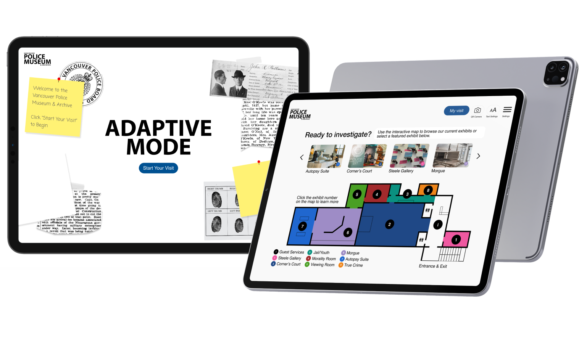
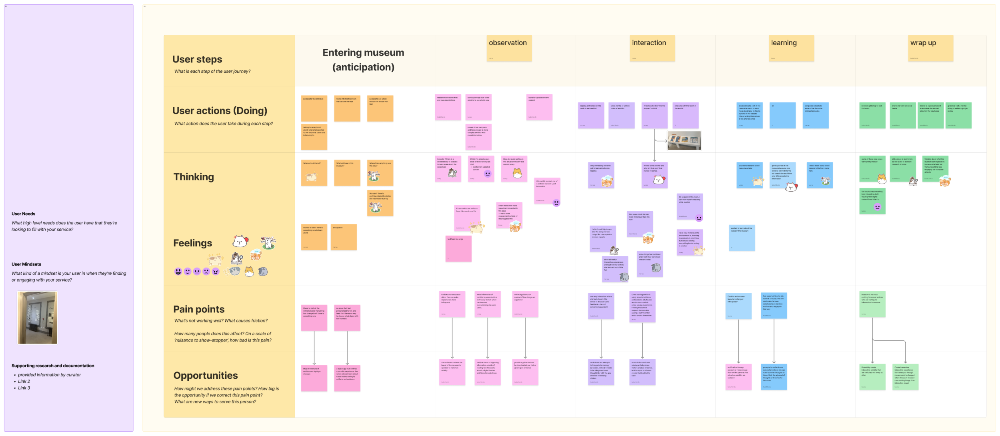
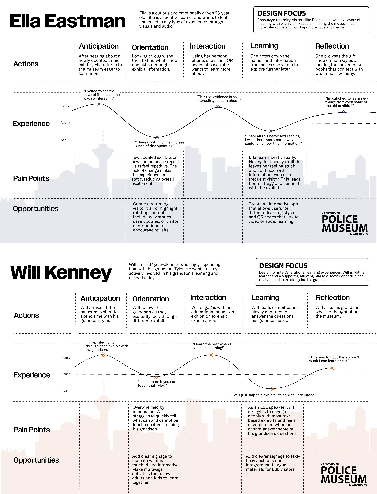
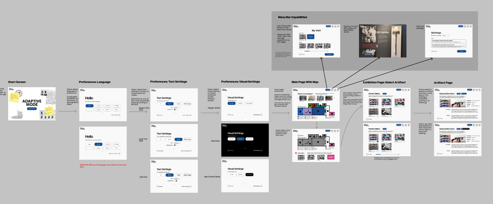
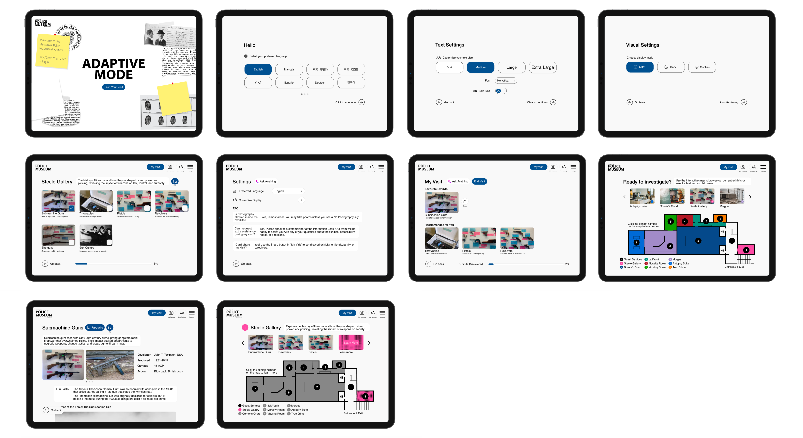

Adaptive Mode
Interactive experience designed with the Vancouver Police Museum.
Purpose — Project Overview
The Vancouver Police Museum's static exhibits made it hard for visitors with different backgrounds and accessibility needs to stay engaged. I led the UX process, from research through prototyping, to design Adaptive Mode — a guided, accessible experience built with museum stakeholders and planned for future implementation once the museum's nonprofit budget allows.
Problem
Static exhibits limited engagement, accessibility, and clarity for a diverse range of visitors.
Outcome
A guided, customizable interaction model that makes exhibits more accessible.
My Role
I led the UX process end to end, working directly with museum stakeholders.
- Research: Ran the field, external, and ethnographic studies before the pitch.
- Journey mapping: Synthesized research into maps that surfaced where visitors disengaged.
- Storyboarding: Explored concepts and landed on Adaptive Mode as the strongest direction.
- Interaction design: Designed the flows and interaction model, applying WCAG and POUR.
- Prototyping: Built high-fidelity prototypes to test and communicate the experience.
- Stakeholder collaboration: Kept the process grounded in what the museum could support, and delivered guidelines so the team can implement it without me.

Research & Process
I combined observation and qualitative methods to understand the visitor experience and pinpoint friction points.
- External Observations — Watched how visitors interacted with exhibits: where they lingered, skipped past content, or looked confused.
- Field Observations — Documented accessibility challenges and navigation issues on-site.
- Ethnographic Studies — Gathered visitor insights on expectations and frustrations.
I brought these findings together into journey maps that mapped each stage of a visit to see exactly where engagement dropped off, and why.
The maps showed:
- Static exhibits often failed to engage visitors or support learning for all abilities.
- Dense text, limited language support, and unclear wayfinding created accessibility barriers.
- Cognitive, sensory, and physical limitations kept some visitors from fully participating.
- Visitors responded well to modular, guided, interactive experiences.
That evidence pointed directly to Adaptive Mode. I explored several concepts through storyboarding, evaluating each against these findings, and Adaptive Mode emerged as the strongest direction.


Design Scope
How might we make the museum's content more accessible, so every visitor can explore with confidence?
The Focus: Accessibility
I designed Adaptive Mode around WCAG standards and the POUR framework. High-contrast mode, multilingual and audio-supported content, and adjustable text sizes let visitors customize the experience. Large touch targets and plain-language content keep it simple and easy to navigate, and the system works with assistive technologies and adapts across devices.


Result
Adaptive Mode gives visitors a guided, accessible way to explore the museum at their own pace, with a modular structure to support future content updates. I delivered high-fidelity mockups, design guidelines, and scenario-based walkthroughs so the museum can implement the system when its budget allows, without needing me involved.
The project is grounded in real research and real stakeholder input, and it's ready to move forward.
Key Learnings
- Data-driven decisions — Research validated every design choice, not assumptions.
- Balancing ambition and feasibility — Even conceptual work needs a realistic foundation.
- Accessibility-first design — Building WCAG in from the start, not as an afterthought, changed how I approached the whole project.